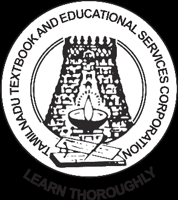

GOVERNMENT OF TAMIL NADU
HIGHER SECONDARY SECOND YEAR
BIOLOGY BOTANY
A publication under Free Textbook Programme of Government of Tamil Nadu
Department of School Education
Untouchability is Inhuman and a Crime
Government of Tamil Nadu
First Edition - 2019
Revised Edition – 2020,2022,2023
OPEN BRACKET Published under New Syllabus CLOSE BRACKET
Content Creation
State Council of Educational
Research and Training
© SCERT 2019
Printing & Publishing

Tamil Nadu Textbook and Educational
Services Corporation
List of professions related to the subject
Learning objectives are brief statements that describe what students will be expected to learn by the end of school year, course, unit, lesson or class period.